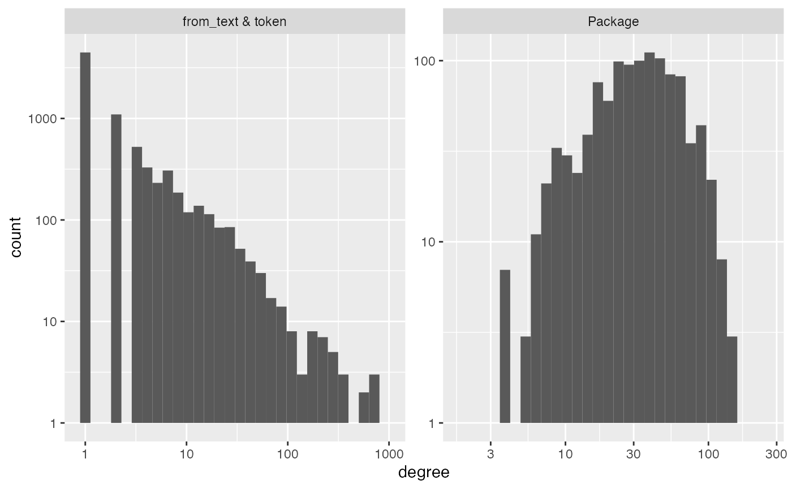
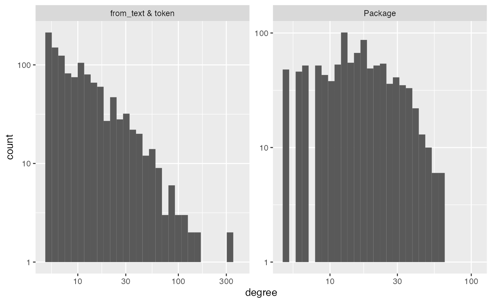
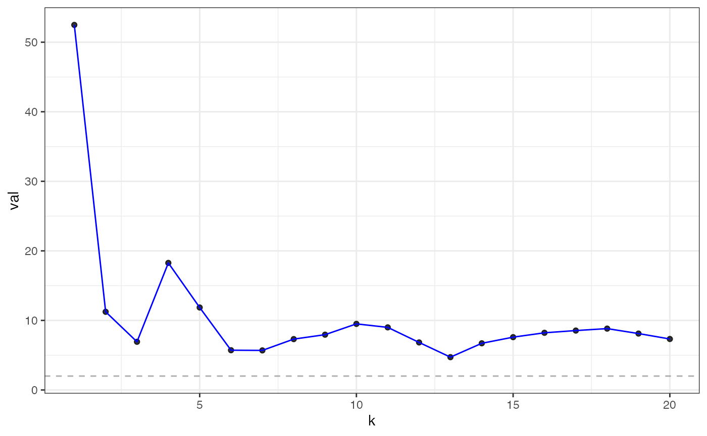
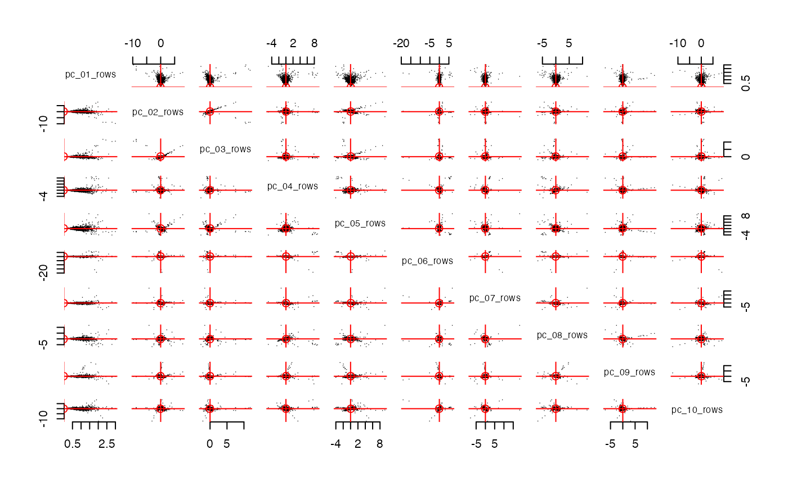
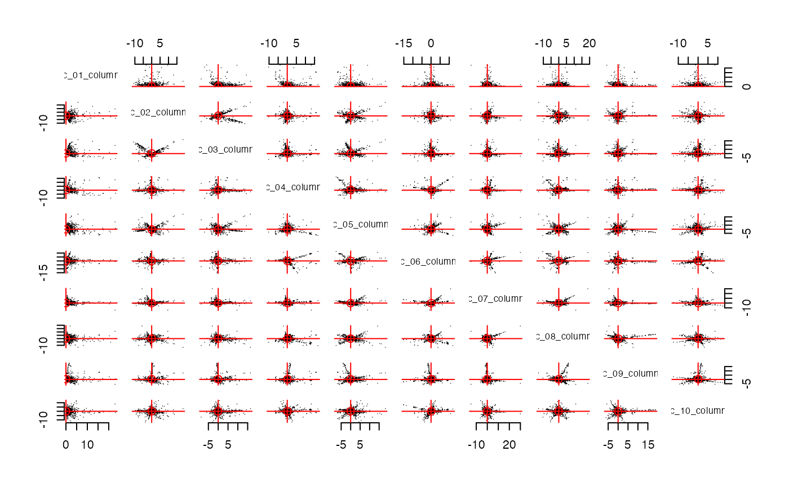

This document shows how you can use parse_text inside
the function make_interaction_model.
Recall
that the basic use of make_interaction_model in the flights
data…
library(nycflights13)
formula = ~ (month & day)*(dest)
im = make_interaction_model(flights, formula)
# pcs = pca(im, k = 6)That article with nycflights13 discussed the formula
syntax for make_interaction_model:
outcome ~ unit * context.
It described four specifications (summarized below). However, Specification 4 could not be demonstrated on that data. This article will discuss Specification 4.
-
Specification 1: We count the co-occurrences of
(month & day)withdestby leaving the left side of the formula empty~ (month & day)*(dest)or by putting a “place holder”1there…1 ~ (month & day)*(dest). Counting the co-occurrences is sometimes called a cross-tab or a contingency table. When we do PCA to this matrix of counts, some folks call that Correspondence Analysis. -
Specification 2: If there is a variable on the left side of
the formula, for example
seats ~ (month & day)*(dest)and we use the default settings formake_interaction_model, then we sum up the number of seats for each(month & day)anddestpair. -
Specification 3: If there is a variable on the left side of
the formula, for example
arr_delay ~ (month & day)*(dest)and we setmake_interaction_model(..., duplicates = "average"), then we take the averagearr_delayover each(month & day)anddestpair. For this specification, one should usepca_nainstead ofpca. -
Specification 4: If there is a variable in the data that is
a sequence that needs to be parsed (e.g. a text field could be a
sequence of words), this this document describes how to use
make_interaction_model(..., parse_text = TRUE).
Specification 4: parsing text.
In the flights data, the variable dest has 105 unique
values. These serve as the context_id’s in the formula
~ (month & day)*dest. Sometimes, a variable in the data
contains free text, or sequences of words. In this case, we
need to first parse/extract the context_id’s (e.g. words/bi-grams/etc).
For example, loaded into longpca is a toy data set
all_packages. It is about 20000 rows. Each row gives
information about one R package.
# you can get a fresh version here:
# all_packages = available.packages() %>% as_tibble()
all_packages |> select(Package, Imports)
#> # A tibble: 20,319 × 2
#> Package Imports
#> <chr> <chr>
#> 1 A3 NA
#> 2 AalenJohansen NA
#> 3 AATtools magrittr, dplyr, doParallel, foreach
#> 4 ABACUS ggplot2 (>= 3.1.0), shiny (>= 1.3.1),
#> 5 abasequence NA
#> 6 abbreviate NA
#> 7 abc NA
#> 8 abc.data NA
#> 9 ABC.RAP graphics, stats, utils
#> 10 ABCanalysis plotrix
#> # ℹ 20,309 more rowsNotice how the column Imports gives a “csv” of other
packages. We can “parse” these values with
parse_text = TRUE:
im_imports = make_interaction_model(all_packages, ~Package*Imports, parse_text= TRUE)
im_imports$row_universe
#> # A tibble: 20,319 × 3
#> Package n row_num
#> <chr> <int> <int>
#> 1 Seurat 64 1
#> 2 tidyverse 60 2
#> 3 radiant.data 58 3
#> 4 radiant.model 58 4
#> 5 SSDM 55 5
#> 6 BasketballAnalyzeR 53 6
#> 7 tRigon 49 7
#> 8 AFM 48 8
#> 9 dextergui 48 9
#> 10 proteus 48 10
#> # ℹ 20,309 more rows
im_imports$column_universe
#> # A tibble: 6,230 × 4
#> from_text token n col_num
#> <chr> <chr> <int> <int>
#> 1 Imports stats 5442 1
#> 2 Imports utils 3423 2
#> 3 Imports dplyr 3299 3
#> 4 Imports methods 3210 4
#> 5 Imports ggplot2 3135 5
#> 6 Imports rcpp 2548 6
#> 7 Imports rlang 2172 7
#> 8 Imports graphics 2158 8
#> 9 Imports magrittr 1954 9
#> 10 Imports stringr 1698 10
#> # ℹ 6,220 more rowsUnder the hood,
make_interaction_model(..., parse_text = TRUE) calls
tidytext::unnest_tokens to parse the variable after the
*. In this case, it converts Imports into a
“bag-of-words”. It also converts every letter to lower case and removes
punctuation. So, the columns in im_imports are indexed by
the unique packages that are imported. There are 20,319 total
Packages in all_packages and each one forms a
“row” in im_imports. Only 6,230 of these packages have been
imported by another package. Each of these forms a “column” in
im_imports. Here “row” and “column” are in quotes because
im_imports is not a matrix, but there is a matrix “under
the hood” that has these rows and columns.
Additional arguments to make_interaction_model are
passed off to tidytext::unest_tokens. For example, by
default it puts the imported packages into lower case. We can turn that
off…
im_imports = make_interaction_model(all_packages, ~Package*Imports, parse_text= TRUE, to_lower = FALSE)
im_imports$column_universe
#> # A tibble: 6,230 × 4
#> from_text token n col_num
#> <chr> <chr> <int> <int>
#> 1 Imports stats 5442 1
#> 2 Imports utils 3423 2
#> 3 Imports dplyr 3299 3
#> 4 Imports methods 3210 4
#> 5 Imports ggplot2 3135 5
#> 6 Imports Rcpp 2548 6
#> 7 Imports rlang 2172 7
#> 8 Imports graphics 2158 8
#> 9 Imports magrittr 1954 9
#> 10 Imports stringr 1698 10
#> # ℹ 6,220 more rowsNotice how Rcpp in row 6 of the
$column_universe was previously rcpp (lower
case). You could parse a different variable instead. For example,
im_text = make_interaction_model(top_packages,~Package*Description, parse_text = TRUE, to_lower= TRUE)
diagnose(im_text)
#> Warning in scale_y_log10(): log-10 transformation introduced
#> infinite values.
#> Warning: Removed 7 rows containing missing values or values outside the scale range
#> (`geom_bar()`).
#> # A tibble: 6 × 3
#> measurement Package `from_text & token`
#> <chr> <dbl> <dbl>
#> 1 number_of_items 1094 7878
#> 2 average_degree 38 5
#> 3 median_degree 33 1
#> 4 percent_le_1 0 57
#> 5 percent_le_2 0 71
#> 6 percent_le_3 0 77
im_text$column_universe |> arrange(desc(n))
#> # A tibble: 7,878 × 4
#> from_text token n col_num
#> <chr> <chr> <int> <int>
#> 1 Description and 2571 1
#> 2 Description the 1999 2
#> 3 Description of 1388 3
#> 4 Description for 1350 4
#> 5 Description to 1104 5
#> 6 Description a 1013 6
#> 7 Description in 722 7
#> 8 Description functions 581 8
#> 9 Description data 541 9
#> 10 Description package 515 10
#> # ℹ 7,868 more rowsHere we see the stopwords. These will form high degree nodes in your
interaction_model graph. A factor that loads heavily on
these is often a factor that indicates “document length”. Alternatively,
you can remove stop words like this:
# remove stop words by removing them from the column_universe,
# then use the function subset_im to renumber the columns/rows and remove any lines from interaction_tibble
im_text$column_universe = im_text$column_universe |>
anti_join(tidytext::stop_words, by = c("token"="word"))
im_text = im_text |> subset_im()
# inspect the new column_universe to see that the stop words have been removed.
im_text$column_universe |> arrange(desc(n))
#> # A tibble: 7,435 × 4
#> from_text token n col_num
#> <chr> <chr> <int> <int>
#> 1 Description functions 581 1
#> 2 Description data 541 2
#> 3 Description package 515 3
#> 4 Description models 319 4
#> 5 Description doi 285 5
#> 6 Description methods 226 6
#> 7 Description analysis 218 7
#> 8 Description function 164 8
#> 9 Description model 155 9
#> 10 Description based 142 10
#> # ℹ 7,425 more rowsYou can also parse multiple columns with the &:
im_imports_authors = make_interaction_model(top_packages, ~Package*(Imports&Author&Description&Title), parse_text = TRUE)
im_imports_authors$row_universe
#> # A tibble: 1,094 × 3
#> Package n row_num
#> <chr> <int> <int>
#> 1 broom 671 1
#> 2 DescTools 562 2
#> 3 ff 488 3
#> 4 knitr 430 4
#> 5 ape 411 5
#> 6 spatstat 392 6
#> 7 spdep 381 7
#> 8 netmeta 346 8
#> 9 Seurat 339 9
#> 10 spatstat.linnet 333 10
#> # ℹ 1,084 more rows
im_imports_authors$column_universe
#> # A tibble: 17,696 × 4
#> from_text token n col_num
#> <chr> <chr> <int> <int>
#> 1 Author ctb 2744 1
#> 2 Description and 2571 2
#> 3 Author aut 2077 3
#> 4 Description the 1999 4
#> 5 Description of 1388 5
#> 6 Description for 1350 6
#> 7 Description to 1104 7
#> 8 Author https 1048 8
#> 9 Description a 1013 9
#> 10 Author orcid.org 1008 10
#> # ℹ 17,686 more rowsSo, let’s do a quick analysis. We see that the tokens are very very
sparse, with 64% of tokens appearing only once! We will want to keep an
eye out for localization in the streaks plot.
diagnose(im_imports_authors)
#> Warning in scale_y_log10(): log-10 transformation introduced
#> infinite values.
#> Warning: Removed 5 rows containing missing values or values outside the scale range
#> (`geom_bar()`).#> # A tibble: 6 × 3
#> measurement Package `from_text & token`
#> <chr> <dbl> <dbl>
#> 1 number_of_items 1094 17696
#> 2 average_degree 70 4
#> 3 median_degree 62 1
#> 4 percent_le_1 0 60
#> 5 percent_le_2 0 75
#> 6 percent_le_3 0 81Because it is so sparse, the function core can be used
to pull out the densely connected core of the data. In particular, it
treats the interaction_model object as a bipartite graph,
then finds the k-core of the largest connected
component.
# you can remove these words that appear less than 5 times (and documents that have less than 5 words) via:
im_text = core(im_text, core_threshold = 5)
#> [1] "adding graph summaries (coreness and connected components)."
diagnose(im_text)
#> Warning in scale_y_log10(): log-10 transformation introduced
#> infinite values.
#> Warning: Removed 8 rows containing missing values or values outside the scale range
#> (`geom_bar()`).
#> # A tibble: 6 × 3
#> measurement Package `from_text & token`
#> <chr> <dbl> <dbl>
#> 1 number_of_items 1002 1188
#> 2 average_degree 18 15
#> 3 median_degree 15 9
#> 4 percent_le_1 0 0
#> 5 percent_le_2 0 0
#> 6 percent_le_3 0 0We can identify the largest statistically reasonable choice for
k using pick_dim which uses cross-validated eigenvalues
as implimented in the package gdim (github).

eigcv
#> Estimated graph dimension: 20
#>
#> Number of bootstraps: 20
#> Edge splitting probabaility: 0.1
#> Significance level: 0.05
#>
#> ------------ Summary of Tests ------------
#> k z pvals padj
#> 1 52.485295 0.000000e+00 0.000000e+00
#> 2 11.238153 1.324323e-29 1.324323e-29
#> 3 6.928938 2.120063e-12 2.120063e-12
#> 4 18.267156 7.556182e-75 7.556182e-75
#> 5 11.858499 9.721468e-33 9.721468e-33
#> 6 5.716077 5.450576e-09 5.450576e-09
#> 7 5.689208 6.381499e-09 6.381499e-09
#> 8 7.313266 1.303634e-13 1.303634e-13
#> 9 7.949433 9.368327e-16 9.368327e-16
#> 10 9.502129 1.028216e-21 1.028216e-21
#> 11 9.000204 1.126495e-19 1.126495e-19
#> 12 6.834819 4.105421e-12 4.105421e-12
#> 13 4.717907 1.191416e-06 1.191416e-06
#> 14 6.710736 9.682262e-12 9.682262e-12
#> 15 7.593119 1.561483e-14 1.561483e-14
#> 16 8.220860 1.010248e-16 1.010248e-16
#> 17 8.542267 6.580719e-18 6.580719e-18
#> 18 8.822639 5.589641e-19 5.589641e-19
#> 19 8.112027 2.489107e-16 2.489107e-16
#> 20 7.331145 1.140971e-13 1.140971e-13I’m going to pick 10 for convenience.

streaks(pcs, "columns")
streaks(spcs, "columns")Let’s use
im = make_interaction_model(all_packages, ~Package*Imports, parse_text = TRUE, to_lower = FALSE)
pcs = im |> core() |> pca(10)
#> [1] "adding graph summaries (coreness and connected components)."
im_text = make_interaction_model(top_packages, ~Package*(Title & Description), parse_text= TRUE)
im_text$column_universe = im_text$column_universe |> dplyr::anti_join(tidytext::stop_words, by = c("token"="word"))
im_text = im_text |> subset_im() |> core()
#> [1] "adding graph summaries (coreness and connected components)."
bff(pcs, im_text, num_best = 4)
#> # A tibble: 0 × 1
#> # ℹ 1 variable: factor <chr>